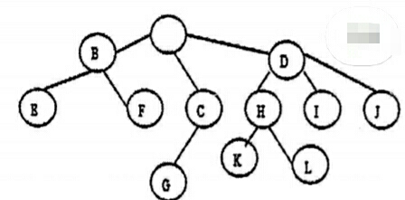
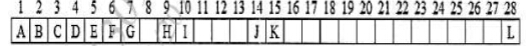
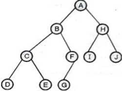
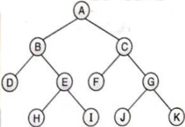
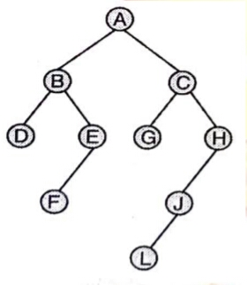
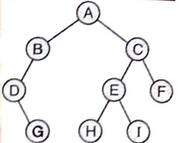

Previous year dsa questions
Unit 2 : Trees
1. Define Basic Terminologies of Trees with example.
2. Explain the Binary tree with its Types(examples required).
3. Explain Representation of binary tree using sequential and linked organization.
4. With suitable example , explain step for conversion of a general tree into binary tree.
5. Explain the Binary Search Tree in details with example.
6.Construct Binary Search Tree(BST) for the following :
a) J, R, D, G, T, E, M, H, P, A, F, Q
b) MAR, MAY, NOV. AUG, APR, JAN, DEC, JUL, FEB, JUN, OCT, SEPT
7. Explain Threaded Binary Tree with its advantages and disadvantages.
8. Write a short notes on Huffman Coding.Construct Huffman's Tree and the prefix free code for all characters given: A->3, B->5, C->8, D->2, E->7
9. Explain Tree Traversal with it recursive algorithms and example.
10. a) From the given traversals construct the binary tree : Inorder : EICFJBGDKHL postorder : IEJFCGKLHDB Draw the binary tree and write preorder traversal.
b) From the given traversals construct the binary tree. Pre-order : G, B, Q, A, C, K, F, P, D, E, R, H In-order : Q, B, K, C, F, A, G, P, E, D, H, R
11. Convert given general tree into binary tree:

12.For the binary tree representation as an array, perform in-order threading on a tree

13.Solve following tree traversal example.Perform inorder, preorder, postorder traversal of binary tree.
1.

2.

3.

4.
